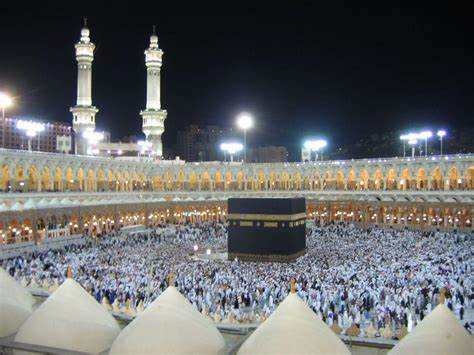

About My Hometown
I was born and raised in Jeddah, Saudi Arabia. It's Arabic name is Al-Mamlakah al-Arabiyah as-Sa’udiyah, or the Kingdom of Saudi Arabia.
KSA is one of the largest states in the Western Asia by land area. The Arabian Peninsula is the world’s largest peninsula.
Jeddah is the second largest city in the kingdom after the capital city of Riyadh.
Also, KSA is the birth place of Islam and home of the two holiest shrines: Makkah Al-Mukarramah & Madinah Al-Munawarah.
Below is the picture of the holy city of Makkah Al-Mukarramah:
And below is the image of the holy city of Madinah Al-Munawarah:

KSA was founded in 1932 by Abdulaziz ibn Abdul Rahman ibn Faisal ibn Turki ibn Abdullah ibn Muhammad Al Saud, known in the West as Ibn Saud.

Some of the quick facts about KSA are as follows:
Population: ~ 33 million approximately
Climate: Harsh and dry desert with great temperature extreme.
Life Expectancy: ~ 75.22 years (according to 2020 survey report)
Major Exports: Petroleum and petroleum products 90%
Major Imports: Machinery and equipment, foodstuffs, chemicals, motor vehicles, and textiles.
National Symbol: Palm tree surmounting two crossed swords.
National anthem: Aash Al Maleek (Long Live Our Beloved King)